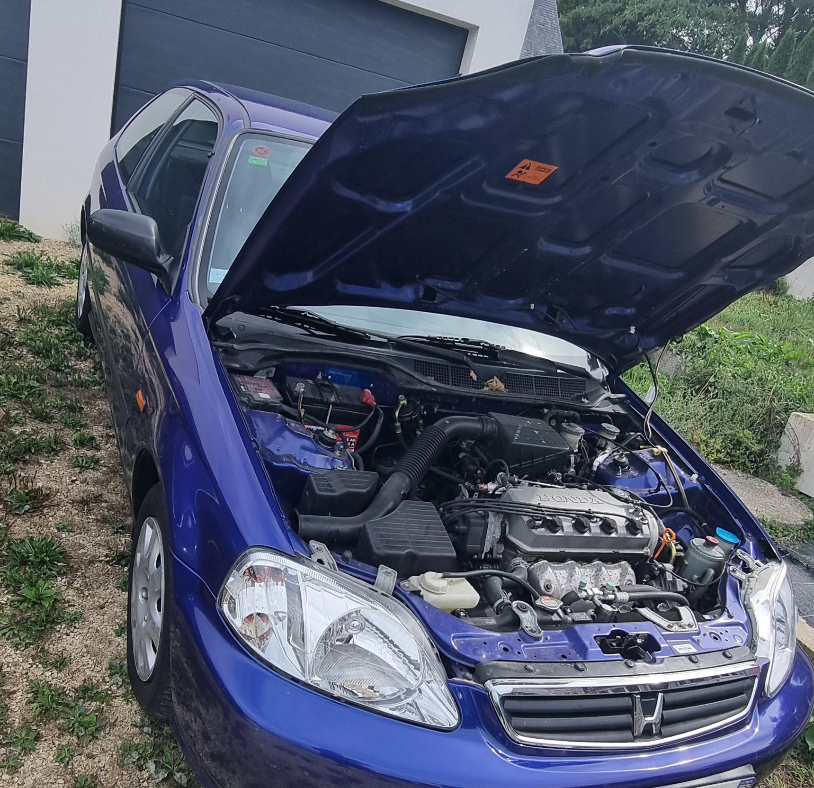
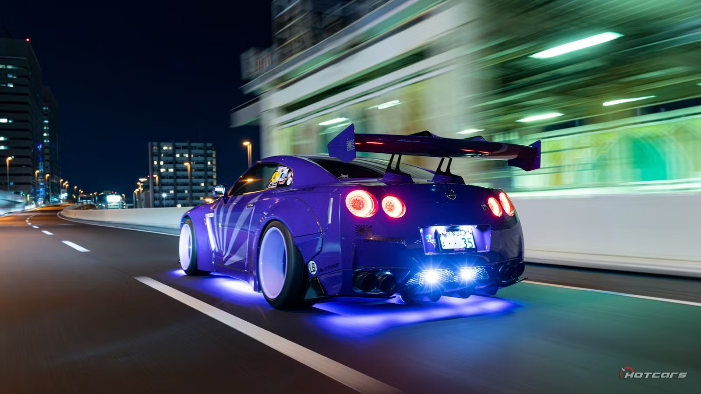

J'ai ma propre voiture sur laquelle j'ai envie d'apprendre à faire les choses moi-même, et un vrai faible pour le style des voitures japonaises.

class="filled">J'ai ma propre voiture, et plutôt que de tout confier à un garage, j'aime apprendre à comprendre et entretenir moi-même certains éléments. C'est un peu la même logique qu'en programmation : comprendre comment ça marche avant de simplement faire réparer.

Côté design, ce sont les voitures japonaises qui m'attirent le plus. Ma voiture de rêve : une Nissan GT-R R35 avec un kit large Liberty Walk — ce mélange de performance et de look radical résume bien ce que j'aime dans l'automobile.
« Une voiture, ça se comprend avant de se réparer. » — Brayan Campion